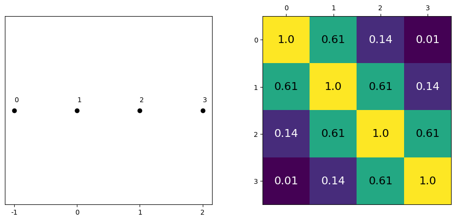
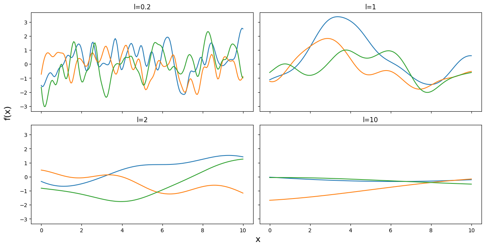
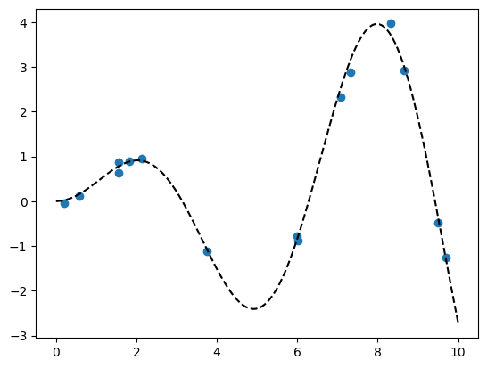
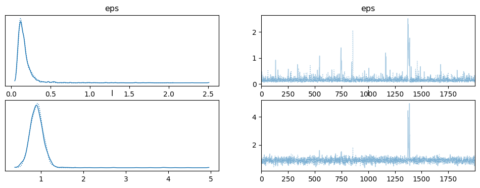
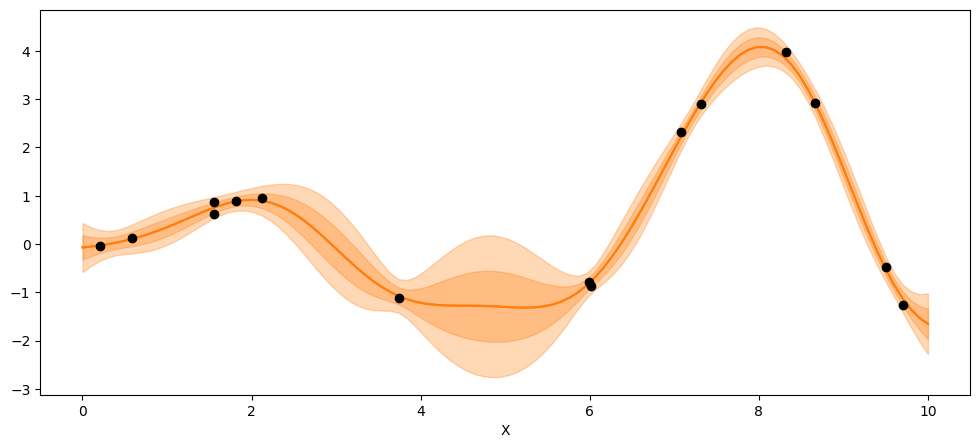
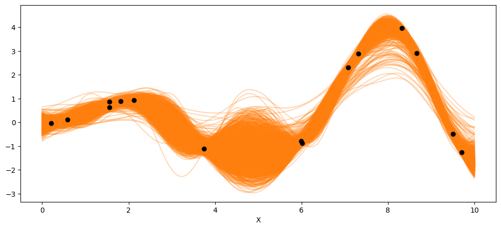
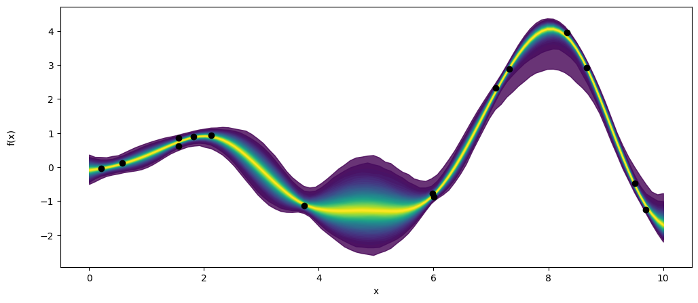

Gaussian Processes#
%pip install pymc pytensor
Requirement already satisfied: pymc in /usr/local/lib/python3.12/dist-packages (5.28.5)
Requirement already satisfied: pytensor in /usr/local/lib/python3.12/dist-packages (2.38.3)
Requirement already satisfied: arviz<1.0,>=0.13.0 in /usr/local/lib/python3.12/dist-packages (from pymc) (0.22.0)
Requirement already satisfied: cachetools<7,>=4.2.1 in /usr/local/lib/python3.12/dist-packages (from pymc) (6.2.6)
Requirement already satisfied: cloudpickle in /usr/local/lib/python3.12/dist-packages (from pymc) (3.1.2)
Requirement already satisfied: numpy>=1.25.0 in /usr/local/lib/python3.12/dist-packages (from pymc) (2.0.2)
Requirement already satisfied: pandas>=0.24.0 in /usr/local/lib/python3.12/dist-packages (from pymc) (2.2.2)
Requirement already satisfied: rich>=13.7.1 in /usr/local/lib/python3.12/dist-packages (from pymc) (13.9.4)
Requirement already satisfied: scipy>=1.4.1 in /usr/local/lib/python3.12/dist-packages (from pymc) (1.16.3)
Requirement already satisfied: threadpoolctl<4.0.0,>=3.1.0 in /usr/local/lib/python3.12/dist-packages (from pymc) (3.6.0)
Requirement already satisfied: typing-extensions>=3.7.4 in /usr/local/lib/python3.12/dist-packages (from pymc) (4.15.0)
Requirement already satisfied: setuptools>=59.0.0 in /usr/local/lib/python3.12/dist-packages (from pytensor) (75.2.0)
Requirement already satisfied: numba<=0.65.1,>=0.58 in /usr/local/lib/python3.12/dist-packages (from pytensor) (0.60.0)
Requirement already satisfied: filelock>=3.15 in /usr/local/lib/python3.12/dist-packages (from pytensor) (3.29.1)
Requirement already satisfied: etuples in /usr/local/lib/python3.12/dist-packages (from pytensor) (0.3.10)
Requirement already satisfied: logical-unification in /usr/local/lib/python3.12/dist-packages (from pytensor) (0.4.7)
Requirement already satisfied: miniKanren in /usr/local/lib/python3.12/dist-packages (from pytensor) (1.0.5)
Requirement already satisfied: cons in /usr/local/lib/python3.12/dist-packages (from pytensor) (0.4.7)
Requirement already satisfied: matplotlib>=3.8 in /usr/local/lib/python3.12/dist-packages (from arviz<1.0,>=0.13.0->pymc) (3.10.0)
Requirement already satisfied: packaging in /usr/local/lib/python3.12/dist-packages (from arviz<1.0,>=0.13.0->pymc) (26.2)
Requirement already satisfied: xarray>=2023.7.0 in /usr/local/lib/python3.12/dist-packages (from arviz<1.0,>=0.13.0->pymc) (2025.12.0)
Requirement already satisfied: h5netcdf>=1.0.2 in /usr/local/lib/python3.12/dist-packages (from arviz<1.0,>=0.13.0->pymc) (1.8.1)
Requirement already satisfied: xarray-einstats>=0.3 in /usr/local/lib/python3.12/dist-packages (from arviz<1.0,>=0.13.0->pymc) (0.10.0)
Requirement already satisfied: llvmlite<0.44,>=0.43.0dev0 in /usr/local/lib/python3.12/dist-packages (from numba<=0.65.1,>=0.58->pytensor) (0.43.0)
Requirement already satisfied: python-dateutil>=2.8.2 in /usr/local/lib/python3.12/dist-packages (from pandas>=0.24.0->pymc) (2.9.0.post0)
Requirement already satisfied: pytz>=2020.1 in /usr/local/lib/python3.12/dist-packages (from pandas>=0.24.0->pymc) (2025.2)
Requirement already satisfied: tzdata>=2022.7 in /usr/local/lib/python3.12/dist-packages (from pandas>=0.24.0->pymc) (2026.2)
Requirement already satisfied: markdown-it-py>=2.2.0 in /usr/local/lib/python3.12/dist-packages (from rich>=13.7.1->pymc) (4.2.0)
Requirement already satisfied: pygments<3.0.0,>=2.13.0 in /usr/local/lib/python3.12/dist-packages (from rich>=13.7.1->pymc) (2.20.0)
Requirement already satisfied: toolz in /usr/local/lib/python3.12/dist-packages (from logical-unification->pytensor) (0.12.1)
Requirement already satisfied: multipledispatch in /usr/local/lib/python3.12/dist-packages (from logical-unification->pytensor) (1.0.0)
Requirement already satisfied: mdurl~=0.1 in /usr/local/lib/python3.12/dist-packages (from markdown-it-py>=2.2.0->rich>=13.7.1->pymc) (0.1.2)
Requirement already satisfied: contourpy>=1.0.1 in /usr/local/lib/python3.12/dist-packages (from matplotlib>=3.8->arviz<1.0,>=0.13.0->pymc) (1.3.3)
Requirement already satisfied: cycler>=0.10 in /usr/local/lib/python3.12/dist-packages (from matplotlib>=3.8->arviz<1.0,>=0.13.0->pymc) (0.12.1)
Requirement already satisfied: fonttools>=4.22.0 in /usr/local/lib/python3.12/dist-packages (from matplotlib>=3.8->arviz<1.0,>=0.13.0->pymc) (4.63.0)
Requirement already satisfied: kiwisolver>=1.3.1 in /usr/local/lib/python3.12/dist-packages (from matplotlib>=3.8->arviz<1.0,>=0.13.0->pymc) (1.5.0)
Requirement already satisfied: pillow>=8 in /usr/local/lib/python3.12/dist-packages (from matplotlib>=3.8->arviz<1.0,>=0.13.0->pymc) (11.3.0)
Requirement already satisfied: pyparsing>=2.3.1 in /usr/local/lib/python3.12/dist-packages (from matplotlib>=3.8->arviz<1.0,>=0.13.0->pymc) (3.3.2)
Requirement already satisfied: six>=1.5 in /usr/local/lib/python3.12/dist-packages (from python-dateutil>=2.8.2->pandas>=0.24.0->pymc) (1.17.0)
import numpy as np
import matplotlib.pyplot as plt
from scipy import stats
import pymc as pm
Covariance Functions and Kernel#
def exp_quad_kernel(x,knots,l=1):
return np.array([np.exp(-(x-k)**2/(2*l**2)) for k in knots])
data = np.array([-1,0,1,2])
#data = np.array([-1,0])
cov = exp_quad_kernel(data,data,1)
print(cov)
[[1. 0.60653066 0.13533528 0.011109 ]
[0.60653066 1. 0.60653066 0.13533528]
[0.13533528 0.60653066 1. 0.60653066]
[0.011109 0.13533528 0.60653066 1. ]]
_, ax=plt.subplots(1,2,figsize=(12,5))
ax[0].plot(data, np.zeros_like(data),'ko')
ax[0].set_yticks([])
for idx,i in enumerate(data):
ax[0].text(i,0+0.005, idx)
ax[0].set_xticks(data)
ax[0].set_xticklabels(np.round(data,2))
ax[1].grid(False)
im = ax[1].imshow(cov)
colors=['w','k']
for i in range(len(cov)):
for j in range(len(cov)):
ax[1].text(i,j, round(cov[i,j],2), color=colors[int(im.norm(cov[i,j])>0.5)], ha = 'center', va='center', fontdict={'size':16})
ax[1].set_xticks(range(len(data)))
ax[1].set_yticks(range(len(data)))
ax[1].xaxis.tick_top()

np.random.seed(24)
test_points = np.linspace(0,10,200)
fig, ax = plt.subplots(2,2,figsize=(12,6),sharex=True,sharey=True,constrained_layout=True)
ax = np.ravel(ax)
for idx, l in enumerate((0.2,1,2,10)):
cov = exp_quad_kernel(test_points, test_points, l)
ax[idx].plot(test_points, stats.multivariate_normal.rvs(cov=cov,size=3).T)
ax[idx].set_title(f'l={l}')
fig.text(0.51,-0.03,'x', fontsize=16)
fig.text(-0.03,0.5,'f(x)', fontsize=16, rotation=90)
Text(-0.03, 0.5, 'f(x)')

Gaussian Processes: Implementation#
np.random.seed(42)
x = np.random.uniform(0,10,size=15)
scale = 0.50
y = np.random.normal(scale*x*np.sin(x), 0.1)
plt.plot(x,y,'o')
true_x = np.linspace(0,10,200)
true_y = scale*true_x*np.sin(true_x)
plt.plot(true_x,true_y, 'k--')
[<matplotlib.lines.Line2D at 0x7f12a61ec1a0>]

X = x[:,None]
with pm.Model() as model_reg:
#hyperprior for lengthscale kernel parameter
l = pm.Gamma('l',2,0.5)
#instantiate a covariance function
cov = pm.gp.cov.ExpQuad(1,ls=l)
#mean = pm.gp.mean.Constant(c=0)
#instantiate a GP prior
gp = pm.gp.Marginal(cov_func=cov)#mean_func=mean,
#prior
eps = pm.HalfNormal('eps',25)
#likelihood
y_pred = gp.marginal_likelihood('y_pred',X=X, y=y, sigma=eps)
trace_reg = pm.sample(2000, return_inferencedata=True, target_accept=0.95)
Notes
In GP regression, the marginal likelihood is the probability of the observed data after integrating out (analytically) the unknown function values. The marginal likelihood is needed for two main reasons.
It defines the likelihood used to infer the GP hyperparameters
It is the basis for making predictions at new points.
import arviz as az
az.plot_trace(trace_reg)
array([[<Axes: title={'center': 'eps'}>, <Axes: title={'center': 'eps'}>],
[<Axes: title={'center': 'l'}>, <Axes: title={'center': 'l'}>]],
dtype=object)

az.summary(trace_reg)
| mean | sd | hdi_3% | hdi_97% | mcse_mean | mcse_sd | ess_bulk | ess_tail | r_hat | |
|---|---|---|---|---|---|---|---|---|---|
| eps | 0.177 | 0.145 | 0.069 | 0.312 | 0.008 | 0.036 | 1640.0 | 752.0 | 1.0 |
| l | 0.907 | 0.215 | 0.626 | 1.198 | 0.009 | 0.043 | 1552.0 | 1387.0 | 1.0 |
X_new = np.linspace(np.floor(x.min()), np.ceil(x.max()), 100)[:,None]
with model_reg:
#del marginal_gp_model.named_vars['f_pred']
#marginal_gp_model.vars.remove(f_pred)
f_pred = gp.conditional('f_pred', X_new)
with model_reg:
pred_samples = pm.sample_posterior_predictive(trace_reg, var_names=['f_pred'])
pred_samples
arviz.InferenceData
-
<xarray.Dataset> Size: 3MB Dimensions: (chain: 2, draw: 2000, f_pred_dim_0: 100) Coordinates: * chain (chain) int64 16B 0 1 * draw (draw) int64 16kB 0 1 2 3 4 5 ... 1995 1996 1997 1998 1999 * f_pred_dim_0 (f_pred_dim_0) int64 800B 0 1 2 3 4 5 6 ... 94 95 96 97 98 99 Data variables: f_pred (chain, draw, f_pred_dim_0) float64 3MB -0.2429 ... -1.473 Attributes: created_at: 2026-06-10T13:53:04.545543+00:00 arviz_version: 0.22.0 inference_library: pymc inference_library_version: 5.28.5 -
<xarray.Dataset> Size: 240B Dimensions: (y_pred_dim_0: 15) Coordinates: * y_pred_dim_0 (y_pred_dim_0) int64 120B 0 1 2 3 4 5 6 7 8 9 10 11 12 13 14 Data variables: y_pred (y_pred_dim_0) float64 120B -1.12 -0.4835 ... 0.9431 0.8937 Attributes: created_at: 2026-06-10T13:53:04.558370+00:00 arviz_version: 0.22.0 inference_library: pymc inference_library_version: 5.28.5
Analytic GP prediction at one hyperparameter point
_, ax = plt.subplots(figsize=(12,5))
point = {'l': trace_reg.posterior['l'].mean(), 'eps':trace_reg.posterior['eps'].mean()}
# Xnew: The new input locations where you want to predict the function values.
# point: A dictionary containing the parameter values to evaluate the GP at (e.g., length scale, amplitude).
# If None, PyMC uses the default values defined in your model.
# diag: If True, returns only the diagonal of the covariance matrix instead of the full covariance.
mu, var = gp.predict(X_new, point=point, diag=True, model = model_reg)
sd = var**0.5
ax.plot(X_new,mu,'C1')
ax.fill_between(X_new.flatten(),mu-sd,mu+sd, color="C1",alpha=0.3)
ax.plot(X_new,mu,'C1')
ax.fill_between(X_new.flatten(),mu-2*sd,mu+2*sd, color="C1",alpha=0.3)
ax.plot(X,y,'ko')
ax.set_xlabel('X')
Text(0.5, 0, 'X')

Posterior predictive function samples
print(np.shape(pred_samples.posterior_predictive['f_pred'].mean(axis=0).T))
print(np.shape(X_new))
(100, 2000)
(100, 1)
_, ax = plt.subplots(figsize=(12,5))
ax.plot(X_new, pred_samples.posterior_predictive['f_pred'].mean(axis=0).T, 'C1-', alpha=0.3)
ax.plot(X, y, 'ko')
ax.set_xlabel('X')
Text(0.5, 0, 'X')

_, ax = plt.subplots(figsize=(12,5))
pm.gp.util.plot_gp_dist(ax, pred_samples.posterior_predictive['f_pred'].mean(axis=0), X_new, palette='viridis',plot_samples=False)
ax.plot(X,y,'ko')
ax.set_xlabel('x')
ax.set_ylabel('f(x)',labelpad=25)
Text(0, 0.5, 'f(x)')
